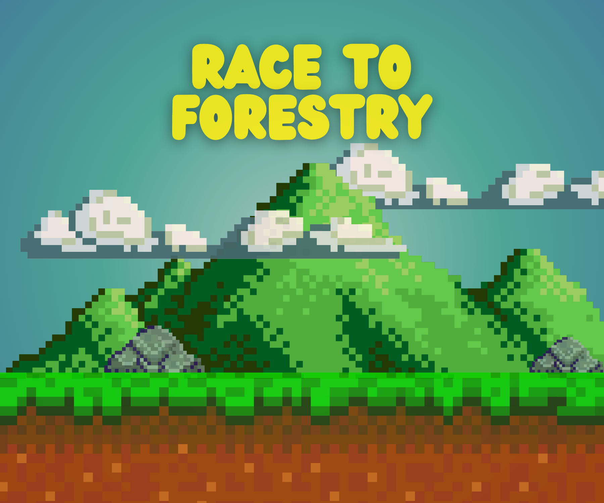

Projects


I was born July 7 2004 in Pasay City. I lived and was raised in Las Piñas City. I learned a lot of lessons throughout my life, mostly during recent years. Exposure to many experiences allowed me to grow. There were countless struggles I had to overcome during my time at UPLB. There were sleepless nights for study, the usual ailments, fighting mental fatigue, but hard times make people more resilient and I am just thankful to have made it out like this. I met a lot of people that helped shape me into becoming who I am today. They helped me break out of my shell, taught me lessons about life, and became my companions during my lowest points. I am thankful to them, my family, and God that I am here as I am.